PandaFit
A playful training companion for university students who want to build exercise habits through small daily missions, visible progress, and motivating rewards.
Mission Brief
We are designing a human-centred web experience that turns training from a vague, easily-abandoned task into a structured and rewarding routine. Our focus is not professional coach management, but habit-building for students and beginners.
Current Focus
The project has entered the optimization stage. We are refining the interface and improving features based on early feedback, while completing remaining functions like language switching and settings to enhance overall usability.
Quick Access
This section provides direct access to posters and presentation materials.

📱 Please View the Demo in Mobile Layout
PandaFit was developed as a mobile-first fitness prototype. The interface, navigation, and visual components are designed for phone-sized screens.
When opened in a wide desktop browser, some components such as the radar chart may appear oversized or misaligned. This does not affect the intended mobile experience. For accurate evaluation, please scan the QR code or use browser mobile preview mode.
Why This Matters
Many students want to exercise more regularly, but they face three recurring barriers: unclear starting points, weak short-term motivation, and poor visibility of progress. PandaFit explores how playful interaction design can reduce those barriers.
Clarity
Users should know what to do today without scrolling through complicated plans.
Motivation
Small wins, visible rewards, and punch cards can make training feel worth continuing.
Growth
Progress should be easy to see so users feel that effort turns into achievement.
Design Direction
Our Working Principles
- Make the first step obvious.
- Use playful feedback without making the system childish.
- Break large fitness goals into short, achievable daily quests.
- Show progress in a way that feels encouraging rather than pressuring.
Target Users
Instead of designing for “everyone who exercises,” we focus on students and beginner users who want support, structure, and motivation.
Pablo Leo
Personality
Detail-oriented, energetic, tech-savvy, patient with beginner learners
Goals
- Create personalized training plans efficiently
- Track student progress and adjust plans
- Improve student engagement and consistency
Pain Points
- No unified system to manage student plans
- Time-consuming communication and follow-up
- Difficult to motivate low-discipline students
Needs
- Quick editable workout templates
- Real-time progress tracking
- Gamified features to motivate students
Rachel
Personality
Enthusiastic but easily distracted, beginner-level, social
Goals
- Learn correct exercise techniques
- Follow a clear beginner-friendly plan
- Track progress and improvements
Pain Points
- Unsure about correct posture
- No clear structured workout plan
- Lacks motivation and feedback
Needs
- Video demos with guidance
- Simple daily workout plans
- Visual progress tracking
Experience Journey
This section visualises Rachel’s fitness journey from initial motivation to long-term continuation. It highlights how confusion, anxiety, and loss of progress visibility affect behaviour, and how PandaFit can intervene with structure, guidance, rewards, and progress tracking.
Journey Map Overview
The journey map shows five stages of the beginner fitness experience: discovery, evaluation, commitment, onboarding, and long-term continuation. Across these stages, the user moves from curiosity and motivation to confusion and anxiety, before either regaining satisfaction or dropping off. This map helps us identify concrete moments where the system should reduce friction, provide guidance, and reinforce progress.
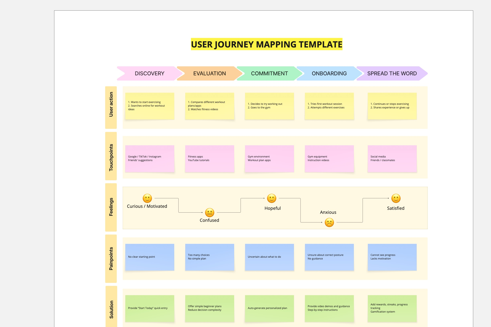
Journey map created in Miro to document Rachel’s actions, touchpoints, emotional changes, pain points, and corresponding design opportunities.
Actor & Scenario
The journey focuses on Rachel, a beginner university student who wants to exercise more regularly but struggles with uncertainty, lack of guidance, and weak long-term motivation.
Stages
The journey moves through discovery, evaluation, commitment, onboarding, and long-term continuation, showing how user expectations and barriers change over time.
Thoughts & Emotions
Rachel begins curious and motivated, becomes confused when faced with too many choices, feels hopeful again when committing, then anxious during real exercise, and only feels satisfied when she receives clear support and visible progress.
Pain Points & Opportunities
The main barriers are unclear starting points, no simple plan, uncertainty about movement, and difficulty seeing progress. These directly inform PandaFit’s use of daily quests, guided instruction, progress tracking, punch cards, and rewards.
Journey Highlights
- Discovery: Users are interested in improving fitness, but need a clear and immediate starting point.
- Evaluation: Too many choices and no simple plan create confusion and slow commitment.
- Onboarding: Anxiety increases when beginners are unsure whether they are exercising correctly.
- Long-term continuation: Lack of visible progress and weak motivation create drop-off risk.
- Design implication: PandaFit should reduce decision complexity, support correct exercise learning, and reward consistency over time.
Academic Research
This section summarises five academic papers that support our project direction. Together, they provide evidence for using gamification, habit-based routines, self-monitoring, and behaviour-change techniques to improve exercise engagement and adherence.
Research Focus
- Whether gamification can meaningfully improve physical activity and engagement.
- How habits are formed through repetition in stable daily contexts.
- Why self-monitoring and visible progress are important in behaviour change.
- What barriers young adults face when trying to stay physically active.
- Which behaviour change techniques are associated with better engagement in mobile health apps.
Paper 1
Title: Evaluating the Effectiveness of Gamification on Physical Activity: Systematic Review and Meta-analysis of Randomized Controlled Trials
Main Idea: This meta-analysis found that gamified interventions have a statistically significant positive effect on physical activity, with effects that can persist beyond the intervention period.
Relevance to PandaFit: This directly supports our decision to include XP, and quest-based interaction in PandaFit to improve motivation and sustained engagement.
Paper 2
Title: How Are Habits Formed: Modelling Habit Formation in the Real World
Main Idea: The study shows that repeated behaviours performed in a stable context become more automatic over time, supporting the role of small and regular actions in habit formation.
Relevance to PandaFit: This supports our design choice of short daily quests, because small repeated training actions are more likely to help users build lasting exercise habits.
Paper 3
Title: The Use of Self-Monitoring and Technology to Increase Physical Activity: A Review of the Literature
Main Idea: This review concludes that self-monitoring, especially when supported by digital technology, is frequently associated with increased physical activity and better behaviour change outcomes.
Relevance to PandaFit: This justifies including progress dashboards, punch cards, and visible performance summaries as core parts of the PandaFit experience.
Paper 4
Title: Barriers and Facilitators to Physical Activity for Young Adult Women: A Systematic Review and Thematic Synthesis of Qualitative Literature
Main Idea: This review highlights that physical activity barriers in young adults are complex and include time pressure, social influences, support, confidence, and environmental constraints.
Relevance to PandaFit: These findings reinforce our need to design a low-pressure, beginner-friendly system that reduces confusion, supports continuity, and offers practical structure for regular exercise.
Paper 5
Title: Potential Associations Between Behavior Change Techniques and Engagement With Mobile Health Apps: A Systematic Review
Main Idea: This review found repeated evidence linking goal setting, self-monitoring, feedback, prompts/cues, rewards, and social support to stronger engagement in mobile health apps.
Relevance to PandaFit: This supports the combination of daily goals, feedback loops, reminders, rewards, and progress tracking in PandaFit as evidence-based strategies for maintaining user engagement.
Commercial Product Review & Gap Analysis
In addition to academic research, we reviewed several existing fitness and habit-building applications to understand how current products support workout planning, motivation, progress tracking, and playful engagement. Instead of only summarising these products, we compared what they do well and what they still miss for beginner student users.
Product 1: Nike Training Club
What it does well:
- Provides professional workout guidance and high-quality exercise videos.
- Offers structured training programmes for different goals and fitness levels.
- Uses a clean and trustworthy interface that makes the app feel reliable.
What it misses:
- It may still feel too professional or serious for complete beginners.
- The playful reward system is not the main focus of the experience.
- It does not strongly reduce the fear of not knowing where to start.
Implication for PandaFit: PandaFit should keep workout guidance simple, but make the first step smaller, clearer, and more playful through daily quests and friendly progress feedback.
Product 2: Keep
What it does well:
- Provides many workout courses and training plans for different users.
- Supports exercise recording, progress checking, and fitness habit tracking.
- Uses community content and fitness challenges to encourage user participation.
What it misses:
- The large amount of content may create choice overload for beginners.
- Some users may still need a clearer daily starting point.
- The experience can feel more like a fitness platform than a playful companion.
Implication for PandaFit: PandaFit should avoid giving users too many options at once. A daily task system can help beginners focus on one achievable action instead of choosing from many courses.
Product 3: Fitbod
What it does well:
- Generates personalised workout plans based on user goals and training history.
- Tracks muscle recovery and previous exercises to support structured training.
- Provides a more data-driven approach for users who want systematic progress.
What it misses:
- Its data-heavy design may be difficult for new gym users to understand quickly.
- It focuses more on training optimisation than emotional motivation.
- It may not be playful enough to help users build a relaxed long-term habit.
Implication for PandaFit: PandaFit should use progress tracking, but present it in a simple and visual way. Instead of showing too much training data, PandaFit can use XP, levels, and growth feedback to make progress easier to understand.
Product 4: Duolingo
What it does well:
- Uses short daily tasks to reduce the difficulty of starting.
- Provides immediate feedback through XP, streaks, levels, and rewards.
- Creates a playful habit-building loop that encourages users to return daily.
What it misses:
- The streak system can sometimes create pressure instead of relaxed motivation.
- It is not designed for physical activity, so its interaction model cannot be copied directly.
- Some reward mechanisms may become repetitive after long-term use.
Implication for PandaFit: PandaFit can learn from Duolingo's daily quest and reward loop, but should avoid creating too much pressure. For beginner fitness users, the playful system should feel encouraging rather than stressful.
Overall Gap Identified
Our review shows that existing fitness products often provide useful workout content, tracking tools, and professional guidance. However, many of them are still too serious, content-heavy, or data-driven for beginner student users. Habit-building products such as Duolingo are strong in playful motivation, but they are not designed for the physical and emotional challenges of exercise.
Design opportunity for PandaFit: PandaFit aims to combine simple workout guidance with a low-pressure playful system. The key design direction is to help users know what to do today, feel rewarded after completing small tasks, and see their long-term growth through visual progress.
Questionnaire Research
To better understand student exercise habits and motivational barriers, we are conducting a questionnaire targeting university students and beginner gym users. The aim is to collect evidence about workout routines, common frustrations, and attitudes towards gamified training support.
Research Purpose
The questionnaire is designed to identify why students struggle to maintain exercise habits and what kind of support they find most useful and motivating.
Participants
77 valid responses were collected, mainly from university students and beginner fitness users. Most respondents were aged 18–35, which matches the primary target audience of PandaFit.
Question Themes
The questionnaire focuses on workout frequency, barriers to consistency, motivational challenges, and user opinions on rewards, progress tracking, and playful fitness features.
Survey Findings
The questionnaire results help us identify the most common barriers in student exercise behaviour and clarify which design features could better support motivation and habit formation.
Finding 1
Most respondents exercise only 1–2 times per week, suggesting that consistent workout habits are not yet established.
Finding 2
The most common barriers are having no clear plan and difficulty tracking progress, indicating a need for structure and feedback.
Finding 3
79.22% of respondents want a training plan, and 87.01% want exercise demonstrations, showing strong demand for guided support.
Finding 4
90.91% want to track progress and 72.73% support gamification, which strongly supports the use of progress tracking and reward systems in PandaFit.
Data Visualisation
The charts below present selected questionnaire results in a more accessible visual form. These visual summaries help us identify patterns in motivation, barriers, and preferred support features among our target users.
Biggest Pain Points in Training
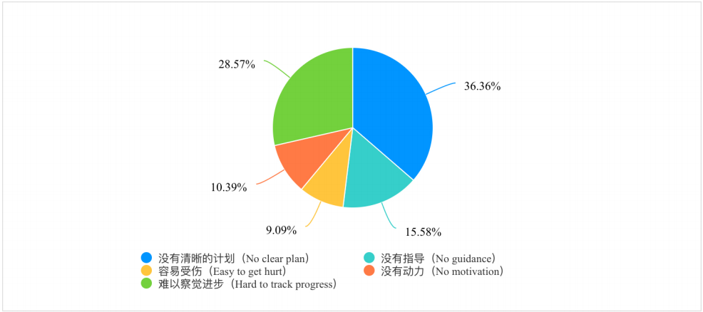
This chart shows that the most common training frustrations are having no clear plan (36.36%) and finding it hard to track progress (28.57%). This supports our decision to prioritise structured daily quests and visible progress features in PandaFit.
Demand for Progress Tracking
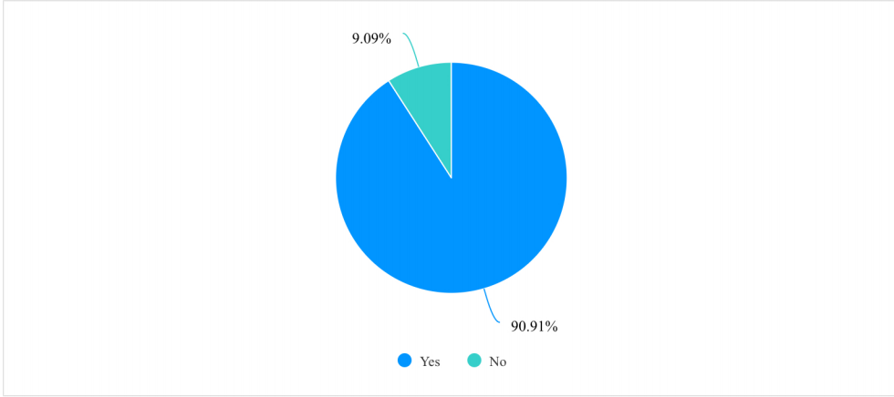
This chart shows that 90.91% of respondents want to track their progress. It suggests that progress visualisation is not optional, but a core requirement for the system. Therefore, PandaFit should include punch cards, progress summaries, and level-based growth feedback.
Evidence of Life: User Research Activities
To make our design process more grounded, we plan to collect visual evidence from user research activities, including questionnaire collection, short interviews, prototype discussion, alpha system testing, and team reflection. This section will be updated with real photos or short clips before the final submission.
Planned Research Evidence
The spaces below are prepared for five pieces of evidence. After collecting the materials, we will add real photos or short videos here. If participants appear in the photos, we will blur faces or use photos with permission.
Photo / Video Placeholder
Questionnaire collection evidenceCollecting Student Fitness Habits
This space will show evidence of our questionnaire collection process, such as a screenshot of the questionnaire page, response collection, or students filling in the survey.
Photo / Video Placeholder
Short user interviewTalking with Beginner Users
This space will be used for a short interview photo or clip. The interview will focus on why students find it difficult to start or continue exercising.
Photo / Video Placeholder
Prototype discussionDiscussing the Figma Prototype
This space will show our discussion around the low-fi or high-fi prototype, especially how users understand daily quests, rewards, and progress tracking.
Photo / Video Placeholder
Alpha system testingTesting the Alpha System
This space will be used for a photo or short clip of a participant trying the PandaFit demo and giving feedback on task management, progress, or language switching.
Photo / Video Placeholder
Team review and reflectionSummarising Feedback as a Group
This space will show our team reviewing user feedback and deciding which design problems should be improved first in the next iteration.
How This Evidence Will Support Our Design
These planned research materials will help us show that PandaFit is not only based on secondary research, but also connected to real student users. The evidence will support our decisions about daily quests, reward feedback, progress tracking, and beginner-friendly interaction design.
After the photos or clips are added, this section will become part of our final evidence for user research, prototype testing, and iterative improvement.
Key Insights from Research
Based on the questionnaire results, we extracted a set of research-based insights that directly inform the design of PandaFit.
Research-Based Insights
- Users need more structure in training, especially clear daily plans and guidance.
- Progress tracking is a core requirement rather than an optional feature.
- Users strongly value exercise demonstrations, especially for safe and correct movement learning.
- Gamification is positively received and can be used to improve motivation and continuity.
Playful System Requirements
Based on our questionnaire results, user journey map, academic research, and product review, we summarised three must-have requirements for PandaFit. These requirements helped us decide what the system should include in order to feel playful, useful, and suitable for beginner student users.
Requirement 1: Clear Daily Starting Point
The system should give users a clear and simple task when they open the app. For beginner users, the first problem is often not laziness, but not knowing what to do or where to start.
Reason: Our research showed that students need more structured workout guidance. Therefore, PandaFit should not only provide many choices, but should guide users toward one small and achievable daily action.
Design response: We designed the Daily Quest concept to help users start quickly without feeling overwhelmed.
Requirement 2: Immediate Positive Feedback
The system should give users visible feedback after they complete a task. This feedback can be simple, such as XP, level progress, punch cards, or small visual changes.
Reason: Many students find it difficult to continue exercising because the result of fitness is not always visible immediately. A playful feedback loop can make small efforts feel more meaningful.
Design response: PandaFit uses reward feedback to let users know that their action has been recorded and valued by the system.
Requirement 3: Visible Long-Term Growth
The system should help users see their progress over time, instead of only focusing on one single workout. This can support habit formation and make users feel that small daily actions are building toward something.
Reason: Our questionnaire and user journey map both suggested that motivation often drops when users cannot see clear progress. For students with irregular schedules, visible growth can provide a stronger sense of continuity.
Design response: We designed progress records, weekly check-ins, and growth-related feedback to help users understand their long-term improvement.
How These Requirements Guided Our Design
These three requirements became the basic design standard for PandaFit. When we discussed features, we checked whether each feature could support at least one of these needs: helping users start, encouraging them after action, or showing their progress over time.
For this reason, we chose to focus on daily quests, reward feedback, and progress visualisation rather than building a very complex fitness platform. This direction fits our target users better because they are mainly students and beginner gym users, not professional athletes.
Design Opportunities
Based on our personas, experience journey, and questionnaire findings, we identified several opportunities where design intervention could improve continuity, clarity, and motivation.
Opportunity 1 · Make It Easier to Start
Instead of asking users to plan everything in advance, PandaFit should help them get started quickly. A simple “Today’s Task” on the home screen can reduce hesitation and make it easier to take the first step.
Opportunity 2 · Keep Users Motivated with Small Feedback
From the papers we have collected, we have found that users feel more motivated when they can see small progress. Features like XP, levels, and simple rewards can make the experience feel more like a game and less like a chore.
Opportunity 3 · Show Progress More Clearly
Users want to know if they are improving. The system should make progress more visible through punch cards, activity records, and simple visual summaries so users feel their effort is meaningful.
Opportunity 4 · Better Task Organization and Clarity
Improving task sorting and making the structure clearer can help users better understand what to do next.
Opportunity 5 · Support Beginners with Clear Guidance
For beginners, not knowing how to exercise correctly can be a barrier. Adding simple instructions, examples, or guidance can make users feel more confident when completing tasks.
Crazy Eights Ideation
To explore different interface possibilities before finalising the high-fidelity prototype, our group used the Crazy Eights method. We quickly sketched eight possible screens for PandaFit, including Home, Task List, Reward, Growth, Video Guide, Add Task, Fitness State, and Profile Settings.
Hand-drawn Sketch Exploration
These sketches are not final UI screens. They were created as quick ideation sketches to help us discuss possible interactions for beginner student users. The focus was on making the app clearer, more motivating, and more playful without making it too complex.
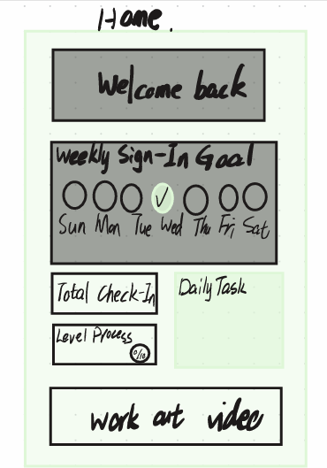
Home / Today Overview
This sketch explores the first screen users see after opening PandaFit. It includes a welcome message, weekly sign-in goal, total check-in, daily task entry, and level progress. The purpose is to let users quickly understand their current status.
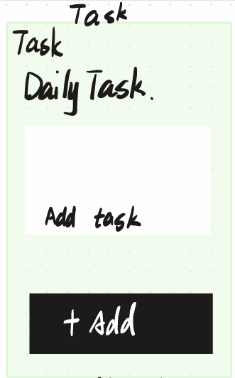
Daily Task List
This sketch focuses on daily task management. Users can see their planned exercise tasks and use the add button to create a new task. This supports our idea of giving users a clear starting point for daily exercise.
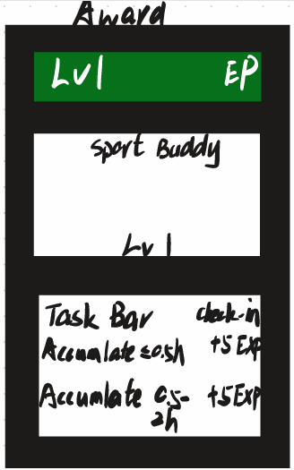
Reward / XP Feedback
This idea shows a reward page with level, EXP, sport buddy, task bar rewards, and accumulated exercise points. It was used to explore how PandaFit can give users immediate positive feedback after completing small actions.
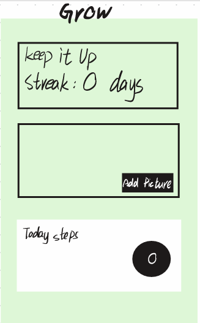
Growth / Streak Page
This sketch includes streak days, a progress area, and today’s step record. It connects to the idea of long-term growth, helping users see that small daily efforts can build into visible progress over time.
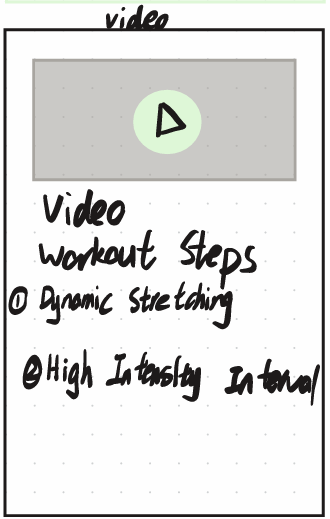
Exercise Video Guide
This sketch explores a workout video page with a play area and exercise steps. It is designed for beginner users who may need simple guidance before starting a workout, such as stretching or interval training.
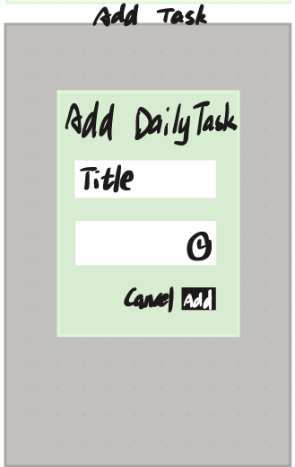
Add Daily Task
This idea shows a simple form for adding a daily task, including a title and time information. It helps users customise their own plan while keeping the interaction simple and easy to understand.
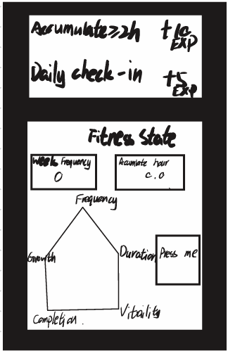
Fitness State
This sketch uses a simple fitness state chart to show different aspects of progress, such as strength, endurance, flexibility, and completion. It gives users a more visual way to understand their current fitness condition.
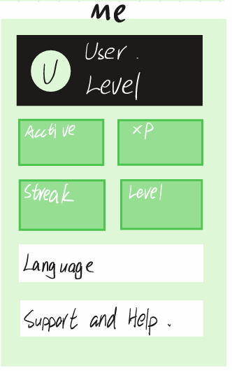
Profile / Settings
This sketch includes user level, active status, XP, streak, language settings, and support options. It supports personalisation and makes PandaFit easier to use for users with different preferences.
How These Sketches Influenced Our Design
These sketches helped us compare different interface ideas before moving into the high-fidelity prototype. We found that the strongest ideas were related to clear daily tasks, reward feedback, visible growth, and beginner-friendly workout guidance.
Based on this ideation stage, we decided to focus on Daily Task, Reward / XP Feedback, Growth Tracking, Exercise Guidance, and Profile Settings in the later prototype. This helped PandaFit stay simple, playful, and suitable for beginner student users.
Design Alternatives Comparison
After reviewing our research findings and planning the Crazy Eights sketches, we compared several possible directions for PandaFit. Instead of directly choosing one design idea, we discussed different ways the system could support beginner student users. This helped us decide which direction was more suitable for our target users.
| Alternative | Main Idea | Strengths | Limitations | Decision |
|---|---|---|---|---|
| A. Coach-led Training Planner | Users follow workout plans created by coaches or instructors. | Provides professional guidance and clear training structure. | It depends too much on coach input and may feel less playful for students who just want a light daily motivation tool. | Not selected as the main direction. |
| B. Social Competition Fitness App | Users compete with friends through rankings, challenges, and leaderboards. | Can motivate some users and make exercise feel more social. | It may create pressure for beginners or users with low confidence. Some students may feel discouraged if they always rank lower than others. | Partly rejected. We kept the idea of encouragement, but avoided strong competition. |
| C. Personal Quest and Growth System | Users complete small daily quests, receive reward feedback, and see visible progress over time. | Beginner-friendly, low-pressure, and directly supports clarity, motivation, and long-term habit building. | It needs careful design so that rewards feel encouraging rather than repetitive or stressful. | Selected as our final design direction. |
Coach-led Training Planner
This idea focuses on professional workout plans. It could be useful for users who want accurate training advice, but it does not fully match our project aim. Our target users are mainly students and beginner gym users, so they may not need a very formal coaching system at the early stage.
Why we did not choose it: It is useful, but it feels more like a serious fitness tool than a playful experience. It also requires more coach-side content and management.
Social Competition Fitness App
This idea uses rankings, friend challenges, and leaderboards to motivate users. At first, we thought this could make the app more exciting. However, after thinking about our users, we realised that competition may not always be suitable for beginners.
Why we did not choose it: Some students may feel stressed or embarrassed if their exercise level is lower than others. This could go against our goal of creating a friendly and inclusive fitness experience.
Personal Quest and Growth System
This direction uses small daily quests, reward feedback, and visible progress to help users build exercise habits. It does not ask users to compete with others or follow a very strict training plan. Instead, it encourages them to complete small achievable actions and gradually see their own improvement.
Why we chose it: It best matches our research findings. Beginner student users need a clear starting point, immediate encouragement, and long-term progress feedback. This direction also fits PandaFit's playful and low-pressure design style.
Final Design Decision
We chose the Personal Quest and Growth System as the main direction for PandaFit. Compared with a coach-led system or a competition-based app, this direction is more suitable for beginner users because it focuses on self-progress rather than performance pressure.
This decision directly shaped our core features: Daily Quest, Reward Feedback, Progress Trail, and beginner-friendly exercise guidance. These features were later developed in our Figma prototype and web-based demo.
Core Feature Concepts
Daily Quest
A short and clear task set that gives users an immediate starting point for the day.
Reward Loop
The pentagon-shaped attribute chart and the cute pet growth system can transform the process of completing tasks into a clear and positive form of motivation.
Progress Trail
A clear experience bar can help users gain an intuitive understanding of the long-term growth situation, rather than merely focusing on the daily achievements.
Prototype Progress
This section documents what has already been prototyped and what remains under development.
Low-Fidelity Prototype
We first translated our research findings into a simple page structure and feature map. At the low-fidelity stage, we focused on information architecture rather than visual polish. The early prototype established the main navigation and core user flow across Home, Task, Award, Grow, and Me.
Mid-/High-Fidelity Prototype
The current prototype has reached a high-fidelity stage in terms of visual design and interaction layout. We have established a consistent mobile interface style, including navigation, page hierarchy, reward presentation, and progress-related components. The design uses a light green and black visual language to communicate motivation, growth, and playful feedback.
Functional Demo Status
For the functional demonstration, several core processes have been able to be showcased.For the functional demonstration, several core processes have been able to be showcased. The "My" page includes account overview, language switching, notifications, support page, the concept of paid membership, and account settings. Some of these functions are currently interactive prototype processes rather than fully completed production functions, and the complete backend consistency is still being further refined.
System Architecture Diagram
This diagram explains how the current PandaFit prototype is organised. It shows the relationship between the interface pages, controller logic, custom components, local data storage, and UI refresh process.
Architecture Overview
The system is divided into three main parts: the UI presentation layer, the business logic and controller layer, and the model and data layer. This structure helps us understand how user actions, task data, reward feedback, and progress information are connected in the prototype.
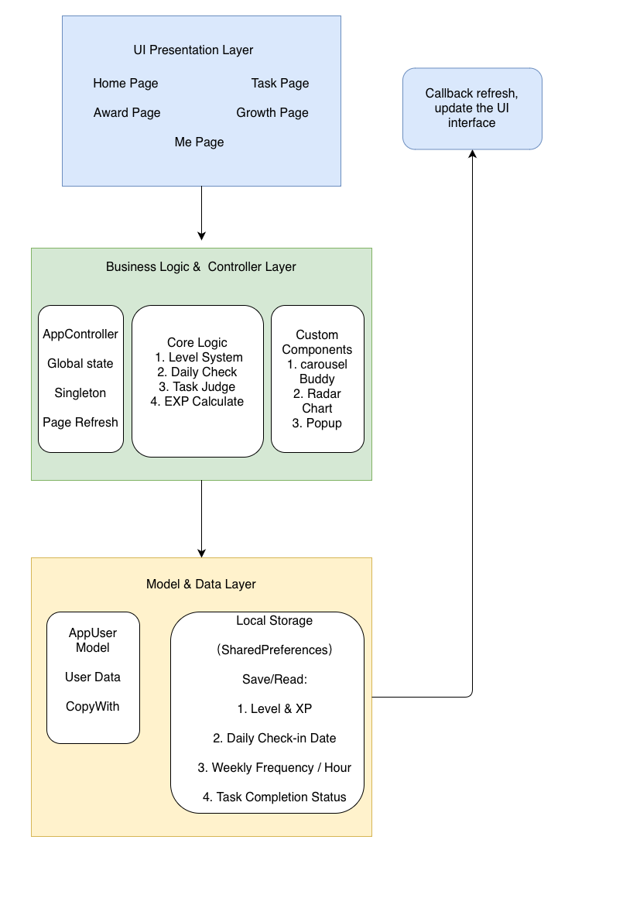
Presentation Pages
The UI layer includes the main pages users interact with, such as Home, Task, Reward, Growth, and Me. These pages present daily tasks, reward progress, growth records, and user profile information.
Business Logic and State Control
The AppController manages global state, page refresh, and main interaction logic. It connects user actions with core functions such as level calculation, daily check-in, task judgement, and XP calculation.
Custom Components
Some interface functions are supported by reusable components, such as the carousel, sport buddy, radar chart, and pop-up feedback. These components help make the system more visual and playful.
Local Data Storage
The current prototype uses local storage to save and read user-related data, including level and XP, daily check-in date, weekly exercise frequency or hours, and task completion status.
How the Architecture Supports PandaFit
This architecture supports the main user flow of PandaFit: users interact with the interface, the controller updates task or progress data, the data layer saves the result, and the UI refreshes to show the latest state.
For the current student prototype, this structure is suitable because it clearly demonstrates how daily tasks, XP rewards, check-in records, and progress feedback are handled. In the future, the local storage part could be replaced or extended with a more complete backend database if the system needs user accounts and cloud synchronisation.
Current Build Status
System Development Overview
The current build has progressed beyond the static prototype stage and now includes both frontend implementation and partial backend connectivity.
Current Build Status
The current version has surpassed the static prototype stage and incorporates some implemented systems. This system includes both the front-end interface and the backend connection functionality.
Front-end Implementation
The main user interface has been designed as a mobile-style application with multiple navigable pages. The core sections include “Home”, “Tasks”, “Rewards”, “Growth”, and “Me”, which are complete and unified in terms of visual presentation, layout, and interaction design. Users can switch between pages, view task records, interact with interface elements, and access different functional sections such as rewards, progress tracking, and personal settings. One key innovation is the idea of mascot growth, which visually reflects the user’s exercise progress.
Backend Implementation
A backend architecture has been developed to support core functions such as user accounts and task-related data. Basic API connections have been established, and the application is capable of communicating with the backend server. However, complete data persistence and synchronization between all modules are still under development.
Integrated Functions
In the current version, several key functions have been implemented and can be demonstrated. These include task display and deletion, weekly sign-in visualization, user profile information, and language switching. Some functions related to rewards and progress have also been partially integrated with backend logic.
Unfinished / Ongoing Features
Some parts of the system are still under development. Certain pages, such as support, premium membership, and detailed settings, are currently presented as interface prototypes rather than complete functional modules. Additionally, consistency between the task system, reward system, and growth tracking is still being refined. Further testing and backend integration are required to complete the full system.
Prototype Screens & Interface Mapping
Overview
This section presents the key interface screens of the PandaFit application prototype. Each screen demonstrates a specific functional module and its role within the overall system.

Home Screen
The main screen will display an overview of the user's daily progress, including the achievement of goals each week, the total number of sign-ins, daily tasks, experience progress, and the function of quickly accessing exercise videos.


Task Management
Users can manage daily tasks and projects, including adding, viewing, and deleting records. The interface supports switching between different task categories.


Reward System
This screen can clearly display the user's progress in each level as well as the experience points they have gained. As the user completes tasks, the mascot will continuously evolve, thereby enhancing their motivation. Moreover, the personal exercise data is visually presented through a pentagonal attribute chart.
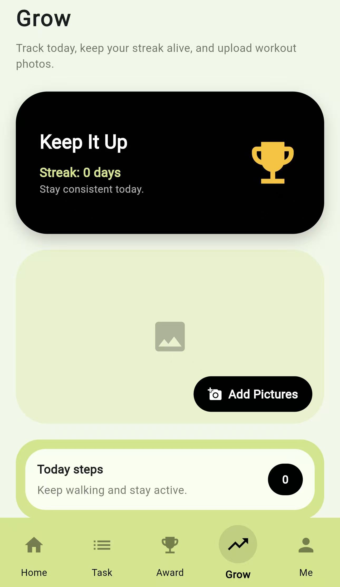
Growth Tracking
The updated Growth page shows users their streak, workout photo upload area, and today’s step record.
It helps beginner users see small progress over time without making the experience feel too complex or stressful.


User Profile
The Profile module brings together user statistics, account settings, language switching, notifications, security, premium information, and the About Us page.
These screens help users manage their account and preferences, making PandaFit feel more complete as a mobile prototype.
Evaluation Plan
Overview
To evaluate the PandaFit system, we plan to test how usable and engaging the app is, as well as whether it actually helps improve users’ motivation to exercise. Instead of relying on a single method, we will combine user testing with feedback collection to get a more realistic understanding of how people interact with the app.
Evaluation Objectives
- To see whether users can easily understand and use the interface
- To check if features like XP, levels, and mascot growth are motivating
- To understand whether users are willing to keep using the app
- To identify any confusing parts or usability issues
Methods
The evaluation will be conducted through a combination of user testing, questionnaires, and observational studies.
- Usability Testing: Participants will be asked to complete several basic tasks, such as adding a task, checking their progress, and switching between pages. During this process, we will observe how easily they can complete these actions.
- Questionnaires: After testing, users will fill in a short questionnaire to share their opinions on usability and overall experience.
- Short Interviews: We will also ask a few follow-up questions to better understand what users liked, what confused them, and whether they felt motivated by the system.
Participants
We plan to recruit around 5–10 participants, mainly university students aged 18–25. This group matches our target users, as many of them are interested in fitness but may find it hard to stay consistent.
Key Tasks
During testing, participants will be asked to:
- Create and manage a task
- View their progress and experience points
- Navigate between the main pages (Home, Tasks, Rewards, Growth, Profile)
- Check weekly activity or streak information
Success Metrics
To measure the effectiveness of the system, we will look at:
- Whether users can complete tasks successfully
- How long it takes them to finish each task
- Their satisfaction ratings from the questionnaire
- Whether they feel more motivated after using the app
- How often they interact with reward-related features
Future Evaluation
In future versions, we would like to run longer-term testing to see if users continue using the app over time. We also plan to track usage data such as how often users log in or complete tasks, once the backend system is fully developed.
Early Testing Notes
Initial Feedback and Issues
- User1: In the past, when using complex fitness apps, I often got stuck in a state of "analysis paralysis". However, PandaFit's "Today's Challenge" completely changed this situation - it eliminated all the guesswork and made starting exercise the most natural part of my day.
- User2: When I turned off the activity ring and saw my daily workout records increasing, a sense of achievement welled up in me instantly. This was the first time I felt that exercising was like a fun game rather than a stressful chore.
- User3: The software is lacking some language translation components. Therefore, I am unable to convert from English to Chinese.
- User4: The software has quite comprehensive functions. However, when I was planning my daily schedule, there was a problem where it did not sort according to the time.
Iterative Refinement: Before & After
After early alpha testing, we identified several usability problems from user feedback. This section shows two changes we made based on those comments: improving bilingual navigation and making the task list clearer.
Why This Section Matters
PandaFit was not designed in one step. We used user feedback to identify problems, compare the old and updated interfaces, and make the prototype easier for beginner student users to understand.
Language Switching Improvement
During testing, one user noticed that the language setting existed, but the interface did not fully change after switching language. This could make PandaFit less friendly for users who prefer Chinese. We therefore improved the navigation labels and profile page text to support clearer bilingual display.
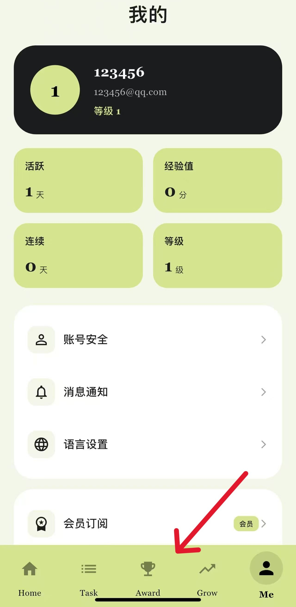
Before
The profile page had a language setting, but the bottom navigation still showed English labels such as Home, Task, Award, Grow, and Me after switching language.
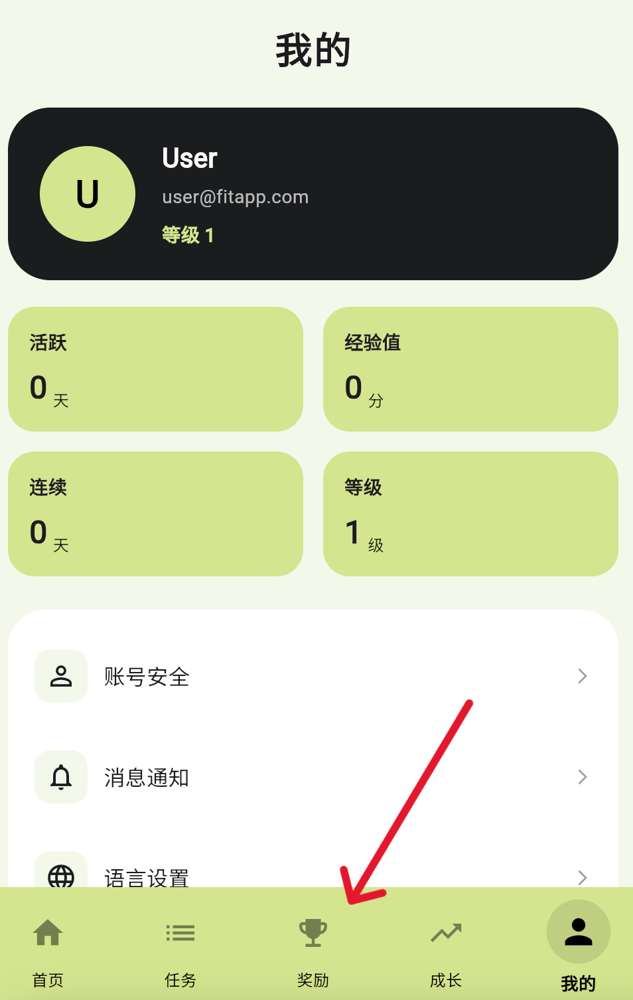
After
The updated version changes the main navigation labels into Chinese, including 首页, 任务, 奖励, 成长, and 我的. This makes the language setting more visible and easier to understand.
User Feedback and Design Response
- User feedback: User 3 could not fully switch the interface from English to Chinese.
- Problem identified: The language option was visible, but some key interface labels were not updated.
- Design response: We improved the bilingual display of the bottom navigation and profile page.
- Expected impact: Users with different language preferences can understand the main navigation more easily.
Task List Clarity Improvement
Another user mentioned that the task list was not arranged clearly. In the earlier version, tasks appeared in a daily overview area, but the order and management logic were not easy to follow. We updated the task page so that tasks are displayed in a clearer list with time information and delete actions.
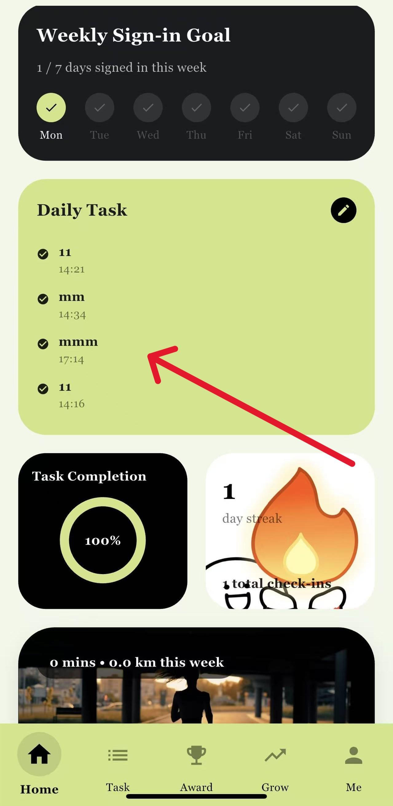
Before
Tasks were shown inside the home page together with other progress widgets. This made it less clear where users should manage their daily tasks.
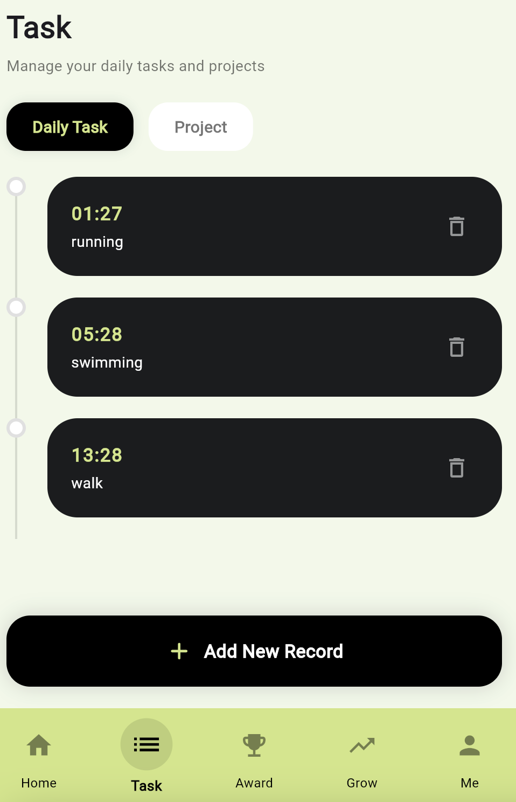
After
The updated task page separates task management into its own screen. Each task has a clear time, task name, and delete button, making the list easier to scan and manage.
User Feedback and Design Response
- User feedback: User 4 found the daily task area a little confusing.
- Problem identified: Task information was mixed with other home page content, so task management was not clear enough.
- Design response: We created a clearer task list page with time labels, task names, and delete buttons.
- Expected impact: Users can find, read, and manage their exercise tasks with less effort.
What We Learned from These Iterations
These two changes show that user testing helped us notice problems that were not obvious during development. The feedback was not mainly about adding more features, but about making existing features easier to understand and use.
For the next version of PandaFit, we will continue improving clarity, reducing confusion, and making the main user flow smoother for beginner student users.
Accessibility & Inclusiveness
This section explains how the system considers usability, accessibility, and beginner-friendly design.
Accessibility Consideration 1
- We tried to keep the interface as simple as possible so that new users don’t feel confused when they first open the app. The main pages like Home, Tasks, and Profile all follow a similar layout, which makes it easier to understand how to navigate between them.
- Also, most buttons are clearly labeled and actions are straightforward, so users don’t need too many steps to complete a task. This helps reduce the chance of getting lost, especially for beginners.
Accessibility Consideration 2
- We also considered basic visual accessibility when choosing colors and layout. The app mainly uses light backgrounds with darker text and some highlighted green elements, which makes the content easier to read.
- Important information like progress and tasks is shown using cards and progress bars, so users can quickly understand their status without reading too much text. However, we think this part can still be improved in the future, for example by supporting larger text sizes.
Inclusiveness Consideration
- The app is designed more for beginners rather than experienced fitness users. Instead of focusing on competition, it encourages users to build small daily habits step by step.
- Features like the Daily Challenge and mascot growth make the experience feel more relaxed and less stressful. Users can progress at their own pace without comparing themselves to others.
- We also added a language switching option to support different users, although this feature is not fully complete yet and still needs improvement.
Ethics Note
Research Ethics and Data Collection
Data & Privacy
We try to avoid collecting unnecessary personal data. The system mainly stores task records and progress information, and this data is only used to support core features. In the future, stronger protection such as secure storage and user consent will be needed.
Motivation Design
The app uses gamification elements like points and punch cards to motivate users. However, this may also create pressure if users feel forced to maintain progress. To reduce this, the design focuses on flexible participation instead of strict requirements.
User Well-being
The system is designed to be beginner-friendly and non-competitive. Instead of comparing users, it encourages personal growth and habit building. The goal is to create a more supportive and less stressful experience.
Technical Reflection on Limited AI-Assisted Development
In this project, AI was used only in a limited supporting role. It was not used to decide our project motivation, user research findings, personas, questionnaire results, design requirements, or core human-centred design logic. These parts were completed by our group through discussion, questionnaire analysis, prototype testing, and design iteration.
AI Use Boundary
We treated AI as a small technical assistant rather than a designer or researcher. AI was mainly used for generating an initial technical development prompt, checking layout ideas, and helping us organise technical explanations. All AI outputs were reviewed, selected, and modified by our team before being used in PandaFit.
What AI Helped With
- Drafting an initial development prompt for the PandaFit Flutter prototype.
- Helping us organise technical requirements such as local storage and page structure.
- Checking small HTML / CSS layout problems in the portfolio website.
- Improving the wording of technical reflection after our group had written the main ideas.
What AI Did Not Decide
- AI did not choose our project topic or define the motivation of PandaFit.
- AI did not create our questionnaire data, user feedback, or evaluation results.
- AI did not decide our personas, journey map, playful requirements, or design alternatives.
- AI did not replace our final judgement about what should be included in the prototype.
Two Concrete AI Use Cases
The following two examples explain how we used AI in practice. Each case follows the structure required for reflection: Prompt, Output, and Action.
Case 1: Generating an Initial Development Prompt for the Flutter Prototype
We asked AI to help us prepare a development prompt for the PandaFit system: “Create a technical development prompt for a fully offline, mobile-first fitness and growth tracking application named PandaFit using Flutter. The app should run on Android, iOS, and Flutter Web. It should include local authentication, home dashboard, daily task management, level and XP progression, unlockable panda characters, radar chart visualisation, local image upload, personal profile page, and settings. No external backend is required, and all data should be stored locally.”
AI produced a structured development prompt with project overview, core functional requirements, and technical requirements. The output was useful because it helped us organise the planned system features clearly. However, it was too broad at first and included many functions that were difficult to finish within the coursework time.
We did not directly treat the AI output as our final system plan. We selected the parts that matched our actual design requirements, such as daily tasks, XP, level progress, profile information, and local storage. Some more complex ideas were simplified or moved to future development. The final feature priorities were still based on our questionnaire results, user journey map, and group discussion.
Case 2: Improving Portfolio Layout and Technical Explanation
When we were improving the process portfolio, we asked AI for help with layout and explanation problems. One example prompt was: “This portfolio section has uneven spacing and the card width does not match the rest of the website. Help me identify the HTML or CSS issue, but do not change the project content.” Another prompt was: “Help me rewrite this technical reflection in a clearer university coursework style, while keeping the meaning and making sure AI is described only as limited support.”
AI suggested possible CSS changes and helped us identify that some layout problems were related to section width, grid structure, or missing closing tags. It also suggested a clearer structure for explaining AI use. Some suggestions were useful, but some wording sounded too formal or too general for a student portfolio.
We checked the HTML and CSS manually, then only kept the changes that fixed the actual website problem. We also edited the reflection wording to make it more accurate and closer to our real work. We removed or changed any sentence that made AI sound like it had created our research findings or design decisions.
How We Verified AI Suggestions
We did not directly accept AI output as final work. Every AI-assisted result was checked by the group before being used in the system or portfolio.
We tested HTML, CSS, and prototype changes in the browser or app preview to make sure the layout and navigation worked correctly.
We checked whether each feature still supported our three main requirements: clear starting point, positive feedback, and visible progress.
We reviewed the wording to make sure it described our real design process and did not add unsupported research claims.
Final design decisions were confirmed by group members, not by AI output.
Ethical Considerations
Because this is a human-centred computing project, we were careful not to let AI weaken the connection between our design and real user needs.
- Accessibility: AI-suggested layouts were checked for readability, clear labels, and responsive display. We did not use a layout only because it looked visually attractive.
- Bias: We avoided AI assumptions that all users are already confident, motivated, or experienced in fitness. PandaFit is mainly designed for beginner student users.
- User pressure: We avoided aggressive ranking or guilt-based streak systems because our aim is to create low-pressure motivation.
- Academic integrity: We clearly separated AI assistance from our own research and design work. AI did not create our questionnaire data, user interview evidence, design alternatives, or evaluation findings.
Useful for Technical Organisation
AI helped us organise development requirements and technical explanations more clearly, especially when describing the Flutter app structure and local data handling.
Not Used as User Research
AI was not treated as a source of user insight. Our design direction came from questionnaire responses, journey mapping, product review, and early testing feedback.
Final Decisions by Group
The team reviewed all AI-assisted content. We only kept suggestions that matched our actual prototype, user needs, and coursework requirements.
AI Tool Documentation
Any AI tool that was actually used will be documented in the final reference list. The citation will describe the limited purpose of use, such as technical prompt organisation, debugging support, layout suggestions, or wording refinement. We will not list AI as a source for user research or design findings.
[AI Tool Reference Example] OpenAI ChatGPT, accessed on 2026-04-27, available at https://chat.openai.com/. Used in a limited supporting role for organising development prompts, HTML/CSS debugging, and portfolio wording refinement. Not used to generate user research findings or decide the core design logic.
[AI Tool Reference Example] GitHub Copilot, accessed on 2026-05-03, available at https://github.com/features/copilot. Used only for minor code completion and development support. All code suggestions were reviewed and tested by the team.
Final Refinement & Limitations
By the final submission stage, PandaFit has completed its main prototype flow, including daily task management, reward feedback, progress tracking, profile settings, and bilingual interface improvement. This section records the final refinements we made and the remaining limitations that could be improved in a future version.
Final Polishing Before Submission
- We improved the language switching experience by updating the main navigation labels from English to Chinese after user feedback.
- We refined the task management flow by separating daily tasks into a clearer task page with time, task name, and delete actions.
- We added before-and-after screenshots to show how user feedback directly influenced our interface iteration.
- We documented the system architecture to explain how UI pages, controller logic, local storage, and UI refresh are connected.
- We completed the portfolio documentation, including research, requirements, design alternatives, prototype evidence, evaluation reflection, and AI-use reflection.
Limited User Testing Scale
Our evaluation included early user feedback, which helped us identify issues such as incomplete language switching and unclear task organisation. However, the number of participants was still limited.
Prototype-level Data Handling
The current system is suitable for demonstrating the main interaction flow. It uses local data handling for task status, XP, level, check-in records, and profile information.
Reward and Growth Feedback Can Be Stronger
PandaFit includes XP, level, check-in, and growth-related concepts, but the connection between completing a task and seeing long-term growth can still be made more obvious.
Human-centred Design Priority
Our final priority was not to add as many features as possible, but to make the existing core flow understandable for beginner users.
Final Reflection
Overall, PandaFit demonstrates our proposed solution for a playful, beginner-friendly fitness companion. The final prototype focuses on clarity, low-pressure motivation, and visible progress rather than complex professional training management.
The remaining limitations are acceptable for a student prototype, but they also show clear directions for future development. If PandaFit continued beyond this coursework, the next stage would focus on larger-scale testing, stronger data synchronisation, and more expressive feedback between tasks, rewards, and growth.
References
The following references support the literature review section and provide evidence for our design decisions regarding gamification, habit building, self-monitoring, and engagement.
- Mazeas, A., Duclos, M., Pereira, B., & Chalabaev, A. (2022). Evaluating the effectiveness of gamification on physical activity: Systematic review and meta-analysis of randomized controlled trials. Journal of Medical Internet Research, 24(1), e26779. https://doi.org/10.2196/26779
- Lally, P., van Jaarsveld, C. H. M., Potts, H. W. W., & Wardle, J. (2010). How are habits formed: Modelling habit formation in the real world. European Journal of Social Psychology, 40(6), 998–1009. https://doi.org/10.1002/ejsp.674
- Page, E. J., Massey, A. S., Prado-Romero, P. N., & Albadawi, S. (2020). The use of self-monitoring and technology to increase physical activity: A review of the literature. Perspectives on Behavior Science, 43(3), 501–514. https://doi.org/10.1007/s40614-020-00260-0
- Peng, B., Ng, J. Y. Y., & Ha, A. S. (2023). Barriers and facilitators to physical activity for young adult women: A systematic review and thematic synthesis of qualitative literature. International Journal of Behavioral Nutrition and Physical Activity, 20, 14. https://doi.org/10.1186/s12966-023-01411-7
- Sailer, M., Hense, J. U., Mayr, S. K., & Mandl, H. (2017). How gamification motivates: An experimental study of the effects of specific game design elements on psychological need satisfaction. Computers in Human Behavior, 69, 371-380.
Team Log
Our team integrates UX research, interface design, and system development to create a scalable and user-centred fitness experience.
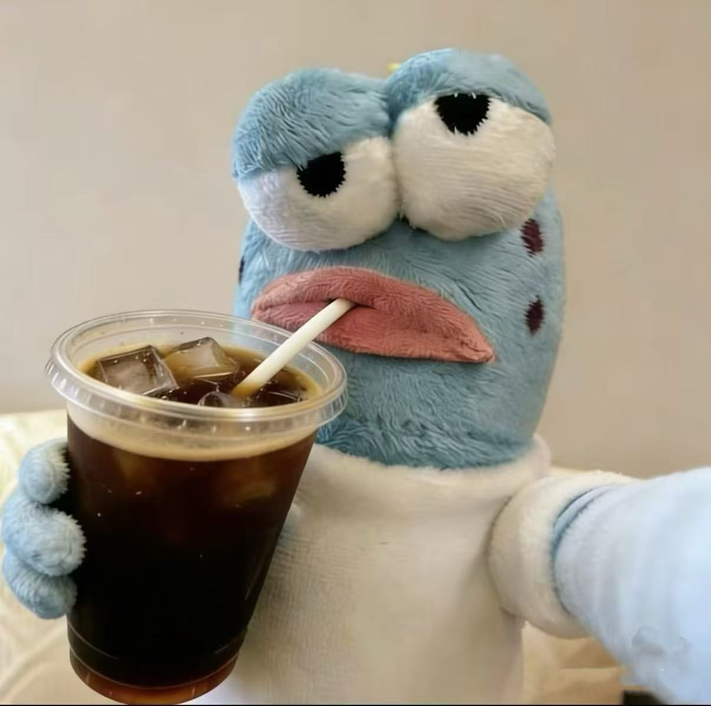
Ye Li
Leads user research through questionnaires and data analysis. Identifies key user needs, pain points, and behavioural patterns to inform design decisions and feature prioritisation.
Tingxian Ren
Responsible for implementing the portfolio website and frontend structure. Focuses on responsive layout, visual consistency, and interaction details to ensure a smooth user experience.
Yi Cao
Designs the visual style and user interface of PandaFit. Focuses on usability, visual hierarchy, and consistency across the system, including journey mapping and prototype design.
Popo Liu
Responsible for backend system planning and architecture design. Will implement core logic such as user data management, progress tracking, and reward systems in future development stages.
Contribution Note
Each team member contributes across multiple stages of the design process, from research and ideation to prototyping, implementation, and system planning.
Team Timeline / Work Log
This section records how our group developed PandaFit from the early research stage to the final Week 10 submission. The timeline shows our research, design, implementation, evaluation, and final portfolio refinement process.
Final Submission Status
By Week 10, our group had completed the main portfolio website, uploaded the project materials to GitHub, and prepared the web-based PandaFit prototype for final demonstration. The final stage focused on improving documentation, adding evidence of iteration, and making the design process clearer for assessment.
Project Understanding and Topic Direction
In the first stage, we read the coursework requirements, discussed possible project directions, and decided to focus on a beginner-friendly fitness support system. We identified that many student users struggle with unclear starting points, weak motivation, and difficulty maintaining exercise habits.
- Confirmed the active lifestyle / Go Trainers direction.
- Discussed target users and early problem space.
- Started the process portfolio structure.
User Research and Journey Mapping
During this stage, we focused on understanding users before designing the system. We created personas, analysed beginner fitness pain points, and developed a user journey map to show where users feel confused, anxious, or unmotivated.
- Created primary user personas.
- Completed the experience journey map.
- Started questionnaire research and academic review.
Requirements and Early Prototype Design
Based on the questionnaire findings, academic research, and product review, we summarised key user needs and converted them into playful system requirements. We also developed early interface ideas and began designing the main PandaFit pages in Figma.
- Defined three must-have playful requirements.
- Created low- and medium-fidelity prototype ideas.
- Compared different design alternatives.
Poster, Alpha System, and Initial Evaluation
In this stage, we prepared the poster and developed the alpha version of the system. Core pages such as Home, Task, Reward, Growth, and Profile became more complete. We also collected early feedback and found usability issues such as incomplete language switching and unclear task organisation.
- Prepared the Week 8 poster presentation.
- Developed the alpha prototype and main navigation flow.
- Recorded early testing notes and user feedback.
Iteration and Technical Refinement
After early testing, we improved the prototype based on user feedback. The language switching experience was refined, and the task management page became clearer with task time, task name, and delete actions. We also documented the system architecture to explain how the UI, controller logic, local storage, and refresh flow work together.
- Added before-and-after iteration evidence.
- Improved bilingual navigation and task list clarity.
- Completed the system architecture diagram.
Final Submission Preparation
In the final week, we focused on polishing the portfolio and making sure the design process was clearly documented. We added commercial product review, Crazy Eights sketches, design alternatives, AI-use reflection, system architecture, and final refinement discussion. We also uploaded the project code and portfolio materials to GitHub for final submission.
- Finalised the GitHub-hosted process portfolio.
- Uploaded project code and supporting assets.
- Checked links, images, demo access, and documentation completeness.
Overall Team Progress
Our team process moved from research and problem understanding to interface design, prototype implementation, user testing, and final iteration. The most important change during the project was that PandaFit became more focused: instead of building a complex fitness platform, we focused on a simple playful flow for beginner users.
The final version of the portfolio records this process through research evidence, requirements, ideation sketches, design alternatives, system architecture, evaluation notes, before-and-after iteration, and reflection. This helps show how our final prototype was developed through a human-centred design process.